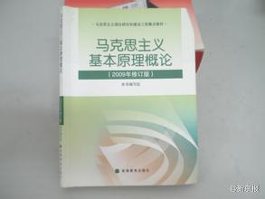

回复@风雨之坛:关于班比失去妈妈的情节，那时姣姣还曾比划枪打我，她乱开枪，我从死人状态中又坐起来，她就很开心，说：“我把妈妈又打起来啦”@Ada李力:#姣姣#四五岁时特别喜欢看动画片<小鹿班比>，看了一遍又一遍。现在放寒假，她又翻出这个动画片继续看，还要求我跟她一起看。— 不解，她现在是小学五年级的孩子，有些同伴同学已经开始青春期发育了。
有过两次发孩子照片，都有人提醒，露出小裤头了。说实话，到现在我也不觉得露小裤头是什么禁忌，比基尼照片到处都是。另外对新闻里报道的有人用照相机偷拍女士裙下，我也一直纳闷，比基尼有这么大的吸引力，不惜冒着被揍被抓的风险？还是因为禁忌才带来如此的吸引力？
#姣姣#问为什么不给爸爸染头发，我说之前总给他染，但他一次也没有帮我过染，我就不想给他染了。姣姣说爸爸不让你染是觉得染发不好。我说我喜欢就要染。姣姣又说可是现在爸爸是病人。我没有再回答，姣姣以为我态度松动，马上试探性地问“那你帮爸爸染染头发吧？”。 闺女还是要帮爸爸的，切～
#姣姣#说班里有些男生特别烦人，看见男生女生在一起近些就起哄，还说谁喜欢谁之类。我说：“你们现在都快进入青春期了，男生会有喜欢的女生，女生会有喜欢的男生。妈妈如果听到你有喜欢的人，或者别人喜欢你，会觉得挺高兴的。”
表明自己的态度之外，我又画蛇添足地加上一些话：“学校和一些家长反对学生早恋什么的，是因为担心这些事情影响学习”。姣姣问我上学时候有没有喜欢过谁，我说朦朦胧胧喜欢过老师，但没喜欢过那时的男同学。@Ada李力:#姣姣#说班里有些男生特别烦人，看见男生女生在一起近些就起哄，还说谁喜欢谁之类。我说：“你们现在都快进入青春期了，男生会有喜欢的女生，女生会有喜欢的男生。妈妈如果听到你有喜欢的人，或者别人喜欢你，会觉得挺高兴的。”
#姣姣#说同学父母对对方都挺好的，我问怎么个好法，她说他们不吵架。我让她用具体事例说说明，她说就是在同学家吃饭时的感觉，觉得同学爸爸对妈妈挺好，妈妈对爸爸也挺好。我问姣姣：“你觉得我对爸爸好吗？”她说还行吧。我问：“那你觉得爸爸对我好吗？”姣姣仍说还行吧。— 偶伤感了会儿。
//@麦田:现在倒退得太厉害了。我记得80年代初，《读书》就提出了“读书无禁区”；过了30多年，反而又回去了。教育部长说出这样的话，是一个重要的标志。开倒车。@新京报:【教育部：绝不能让传播西方价值观念教材进课堂】教育部长袁贵仁29日表示，高校教师必须守好政治底线、法律底线、道德底线。加强对西方原版教材的使用管理，绝不能让传播西方价值观念的教材进入课堂；决不允许各种攻击诽谤党的领导、抹黑社会主义的言论在大学课堂出现。（新华网）袁贵仁:高校教师必须守好政治、法律、道德三条底线 